缩放变换
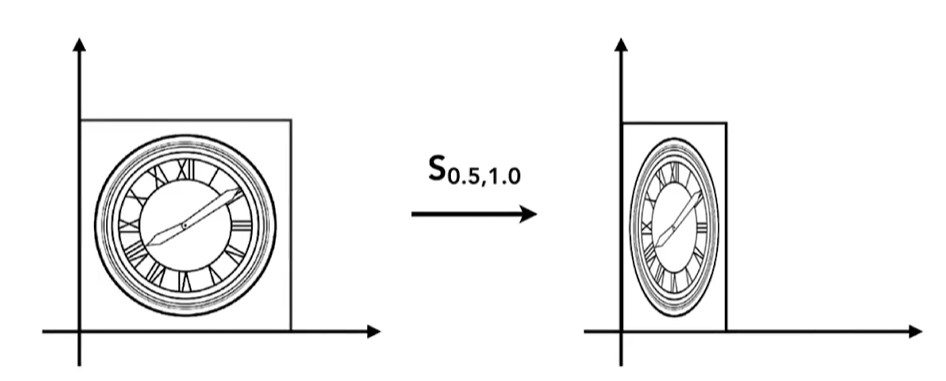
\[
\begin{bmatrix} x' \\ y' \end{bmatrix} = \begin{bmatrix} s_x & 0 \\ 0 & s_y \end{bmatrix} \begin{bmatrix} x \\ y \end{bmatrix}
\]
翻转变换
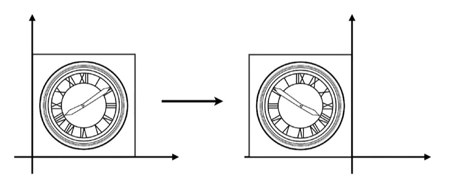
\[
\begin{bmatrix} x' \\ y' \end{bmatrix} = \begin{bmatrix} -1 & 0 \\ 0 & -1 \end{bmatrix} \begin{bmatrix} x \\ y \end{bmatrix}
\]
切变变换
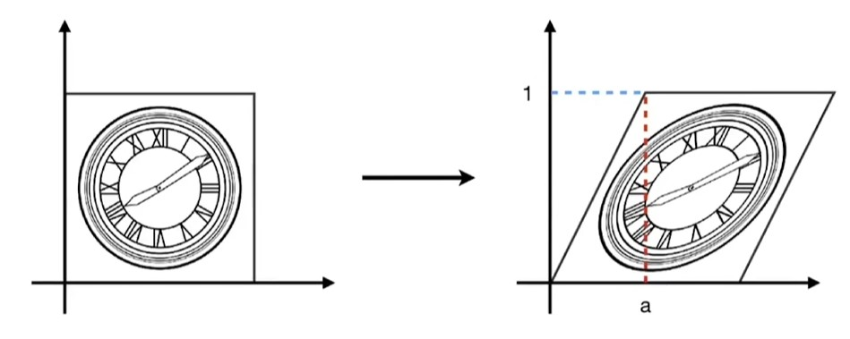
\[
\begin{bmatrix} x' \\ y' \end{bmatrix} = \begin{bmatrix} 1 & a \\ 0 & 1 \end{bmatrix} \begin{bmatrix} x \\ y \end{bmatrix}
\]
旋转变换(默认为逆时针旋转 )
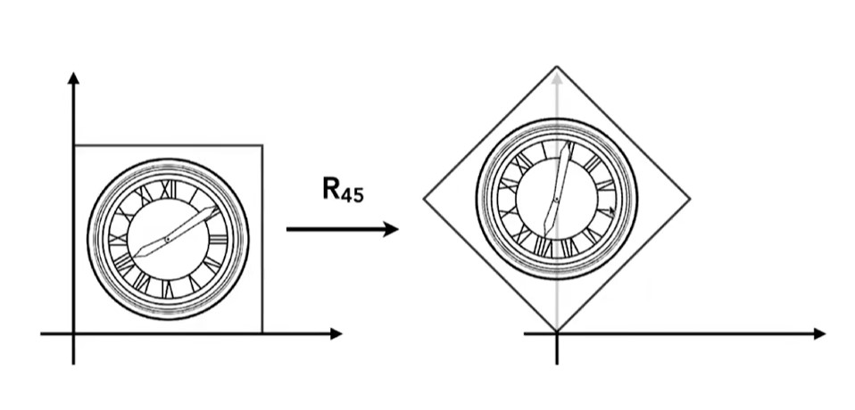
设点 P(x, y) 的极坐标为 r、\(\varphi\) ，即：\(x = r\cos\varphi,\ y = r\sin\varphi\) 。
将点逆时针旋转角度 \(\theta\) 后，角度变为 \(\varphi + \theta\) 。
因此坐标变换为：
\(x' = r\cos(\varphi+\theta) = r(\cos\varphi\cos\theta - \sin\varphi\sin\theta) = x\cos\theta - y\sin\theta\)
\(y' = r\sin(\varphi+\theta) = r(\sin\varphi\cos\theta + \cos\varphi\sin\theta) = x\sin\theta + y\cos\theta\)
\[
\begin{bmatrix} x' \\ y' \end{bmatrix} = \begin{bmatrix} \cos\theta & -\sin\theta \\ \sin\theta & \cos\theta \end{bmatrix} \begin{bmatrix} x \\ y \end{bmatrix}
\]
齐次坐标！！！ (homogeneous coordinate)为什么要引入齐次坐标？
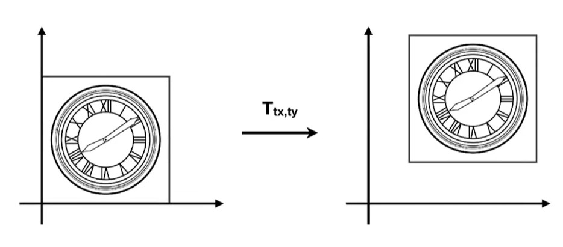
无法简单的用矩阵的乘法来描述平移变换！！
\[
\begin{bmatrix} x' \\ y' \end{bmatrix} = \begin{bmatrix} a & b \\ c & d \end{bmatrix} \begin{bmatrix} x \\ y \end{bmatrix} + \begin{bmatrix} t_x \\ t_y \end{bmatrix}
\]
所以引入齐次坐标，通过增加一个维度，将仿射变换（即平移、缩放、旋转、切变）统一为矩阵乘法表示。
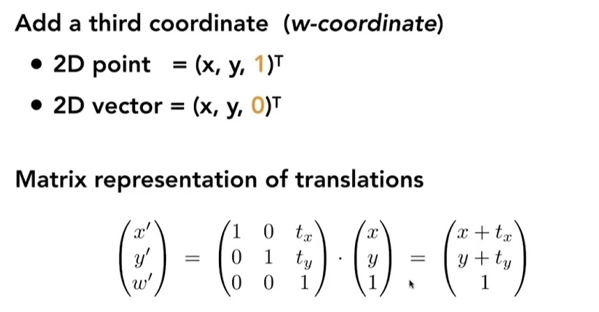
扩充的定义：
\[
\begin{bmatrix} x \\ y \\ w \end{bmatrix} \Rightarrow \begin{bmatrix} x/w \\ y/w \\ 1 \end{bmatrix},\quad w \ne 0
\]
将齐次坐标应用于变换中
缩放变换中：
\[S(s_x, s_y) = \begin{bmatrix} s_x & 0 & 0 \\ 0 & s_y & 0 \\ 0 & 0 & 1 \end{bmatrix}\]
旋转变换中：
\[R(\alpha) = \begin{bmatrix} \cos\alpha & -\sin\alpha & 0 \\ \sin\alpha & \cos\alpha & 0 \\ 0 & 0 & 1 \end{bmatrix}\]
平移变换中：
\[T(t_x, t_y) = \begin{bmatrix} 1 & 0 & t_x \\ 0 & 1 & t_y \\ 0 & 0 & 1 \end{bmatrix}\]
逆变换
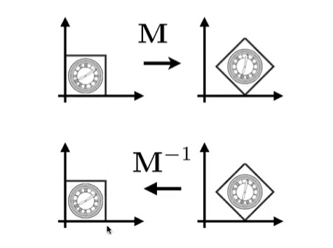
(变换后再进行逆变换回到最初的位置)
先后进行矩阵M的变换和矩阵M的逆 变换
变换的组合
复杂的变换可以通过一系列简单的变换得到：
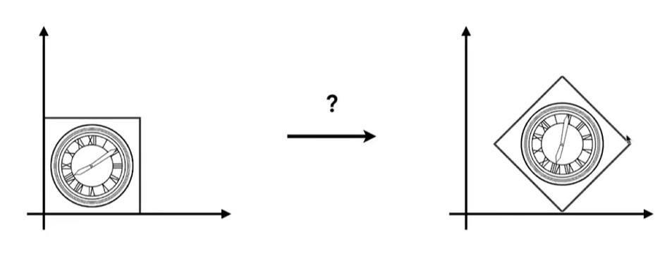
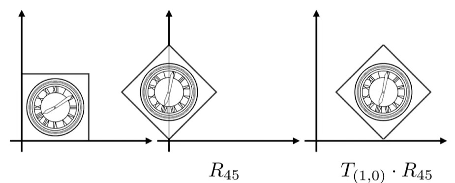
可以通过先旋转后平移的方式得到
变换的顺序不一样，结果也不一样，可以用就矩阵的乘法不满足交换律来理解
同时，矩阵的变换是从右到左依次应用的
\[
A_n(\dots A_2(A_1(\mathbf{x}))) = A_n \cdots A_2 \, A_1 \begin{bmatrix} x \\ y \\ 1 \end{bmatrix}
\]
以上公式中，是先应用A_1变换，再应用A_2变换，最后应用A_n变换，也可以理解为，将所有变换结合，再应用于向量。
变换的分解
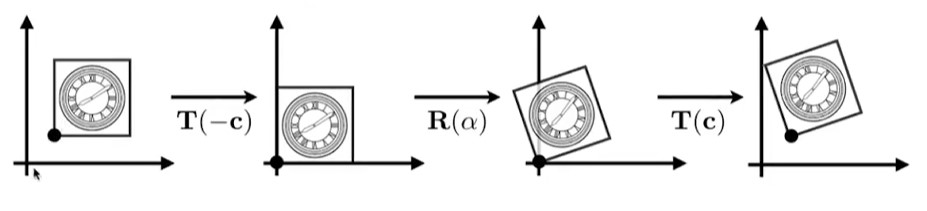
如图，绕矩形左下角的点进行旋转的变换，可以分解为平移，旋转，再进行平移
3D 点的齐次坐标：\((x, y, z, 1)^T\)
3D 向量的齐次坐标：\((x, y, z, 0)^T\)
一般情况：\((x, y, z, w)\) （\(w \ne 0\) ）对应的 3D 点为：\((x/w,\ y/w,\ z/w)\)
经过线性变换和平移的矩阵表示为：
\[
\begin{bmatrix} x' \\ y' \\ z' \\ 1 \end{bmatrix} = \begin{bmatrix} a & b & c & t_x \\ d & e & f & t_y \\ g & h & i & t_z \\ 0 & 0 & 0 & 1 \end{bmatrix} \begin{bmatrix} x \\ y \\ z \\ 1 \end{bmatrix}
\]
缩放变换：
\[
S(s_x, s_y, s_z) = \begin{bmatrix} s_x & 0 & 0 & 0 \\ 0 & s_y & 0 & 0 \\ 0 & 0 & s_z & 0 \\ 0 & 0 & 0 & 1 \end{bmatrix}
\]
平移变换：
\[
T(t_x, t_y, t_z) = \begin{bmatrix} 1 & 0 & 0 & t_x \\ 0 & 1 & 0 & t_y \\ 0 & 0 & 1 & t_z \\ 0 & 0 & 0 & 1 \end{bmatrix}
\]
旋转变换：
绕x,y,z轴旋转：
\[R_x(\alpha)=\begin{bmatrix}
1 & 0 & 0 & 0 \\
0 & \cos\alpha & -\sin\alpha & 0 \\
0 & \sin\alpha & \cos\alpha & 0 \\
0 & 0 & 0 & 1
\end{bmatrix}\]
\[R_y(\alpha)=\begin{bmatrix}
\cos\alpha & 0 & \sin\alpha & 0 \\
0 & 1 & 0 & 0 \\
-\sin\alpha & 0 & \cos\alpha & 0 \\
0 & 0 & 0 & 1
\end{bmatrix}\]
\[R_z(\alpha)=\begin{bmatrix}
\cos\alpha & -\sin\alpha & 0 & 0 \\
\sin\alpha & \cos\alpha & 0 & 0 \\
0 & 0 & 1 & 0 \\
0 & 0 & 0 & 1
\end{bmatrix}\]
在三维空间中，任何一个旋转都可以分解为绕x轴、y轴、z轴的旋转的组合
\[R_{xyz}(\alpha,\beta,\gamma) = R_x(\alpha)\, R_y(\beta)\, R_z(\gamma)\]
罗德里格斯旋转公式：
\[
R(\mathbf{n}, \alpha)
= \cos\alpha\, I
+ (1-\cos\alpha)\,\mathbf{n}\mathbf{n}^\top
+ \sin\alpha\,
\begin{bmatrix}
0 & -n_z & n_y \\
n_z & 0 & -n_x \\
-n_y & n_x & 0
\end{bmatrix}
\]
矩阵\(\mathbf{n}\mathbf{n}^\top\) 的作用是将某向量投影到\(n\) 向量的方向上，矩阵N与向量的乘积等于n向量与某向量的叉积。
视图变换
View变换--如何摆放相机的角度
- 决定相机的位置
- 决定相机看向的方向
- 决定相机头朝上的方向
如何把相机归到原点？
- 平移摄像机至（0，0，0）
- 将相机lookat的方向旋转到-z
- 旋转相机头朝上的方向到Y
视图变换矩阵 = 平移变换矩阵 \(\times\) 旋转变换矩阵
其中旋转变换矩阵较为难求，将相机的轴移到对应的轴上比较苦难，所以我们根据逆变换的性质，求出将轴移动到相机轴所在位置的矩阵，由于旋转矩阵是正交矩阵，所以其逆矩阵等于其转置矩阵，所以我们就可以比较教容易的得出旋转变换矩阵。
投影变换
投影变换分为正交投影变换 和透视投影变换 ，他们的差异体现在能否体现近大远小。
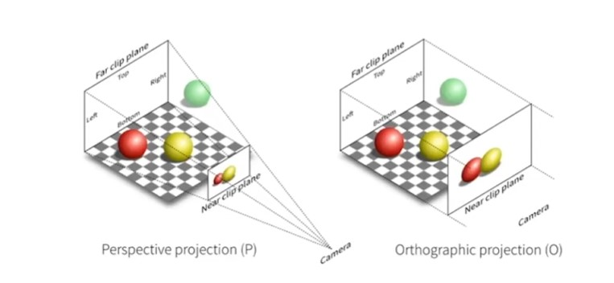
正交投影变换
可以简单理解为：
- 将摄像机的方向看向-z的方向
- 将z坐标去掉
- 将得到的矩形平移并缩放到[-1, 1]的范围
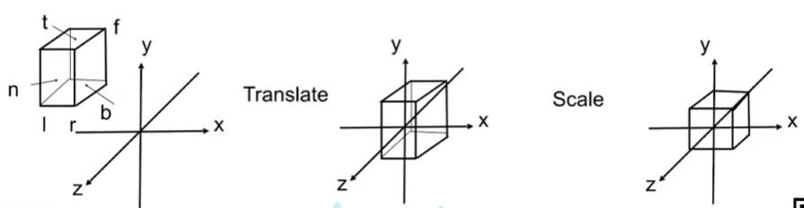
可以理解为将任一立方体移动到标准立方体中
\[
M_{\text{ortho}} =
\begin{bmatrix}
\frac{2}{r-l} & 0 & 0 & 0 \\
0 & \frac{2}{t-b} & 0 & 0 \\
0 & 0 & \frac{2}{n-f} & 0 \\
0 & 0 & 0 & 1
\end{bmatrix}
\begin{bmatrix}
1 & 0 & 0 & -\frac{r+l}{2} \\
0 & 1 & 0 & -\frac{t+b}{2} \\
0 & 0 & 1 & -\frac{n+f}{2} \\
0 & 0 & 0 & 1
\end{bmatrix}
\]
透视投影变换
可以理解为：
- 先进行挤压变换
- 再进行正交投影变换
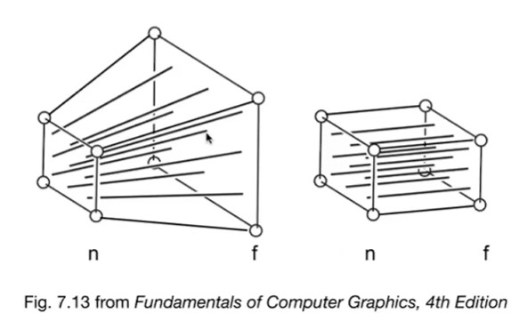
\[
M_{\text{persp}} = M_{\text{ortho}} \, M_{\text{persp}\to\text{ortho}}
\]
{kind=link}
{kind=link}
{kind=link}
{kind=link}
{kind=link}
{kind=link}
{kind=link}
{kind=link}
{kind=link}
{kind=link}
{kind=link}
{kind=link}
{kind=link}